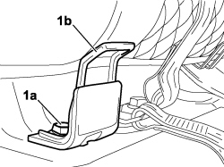

7065B31 ISOFIX CONNECTION (ONE) - R R
- Path
- Procedures > 70 FITTINGS > 7065 SAFETY BELTS AND ACCESSORIES > 7065B REAR SAFETY BELTS > 7065B31 ISOFIX CONNECTION (ONE) - R R
- Kind
- repair procedure (removal / refitting; the operation number is the code)
- Applies to
- all engines; all production periods
- Interactive page
- https://sloeber94.github.io/elrnDB-fCrm/en/#/194001195
Applies to: all engines; all production periods
 Removing
Removing
 Refitting
RefittingOp. 7050A20 ONE-PIECE REAR SEAT CUSHION - R.R.
1. Undo the fixing bolt (1a) and remove the ISOFIX mounting (1b).

Applies to: all engines; all production periods
Refitting
Removing- Position the ISOFIX mounting on the bodyshell.
- Tighten the ISOFIX mounting fixing bolt.
Component | Fastening | dia | Value (daNm) | Validity |
|---|---|---|---|---|
ISOFIX HOOK TO CROSSMEMBER | Bolt | M8 | 3,6 ÷ 4,4 |